Picnic food typically includes sandwiches, salads, fruits, and other easy-to-eat options that travel well and don't require refrigeration. Some popular choices include classic sandwiches like ham and cheese, tuna salad, or veggie wraps, as well as potato salad, pasta salad, and various fruit options.
